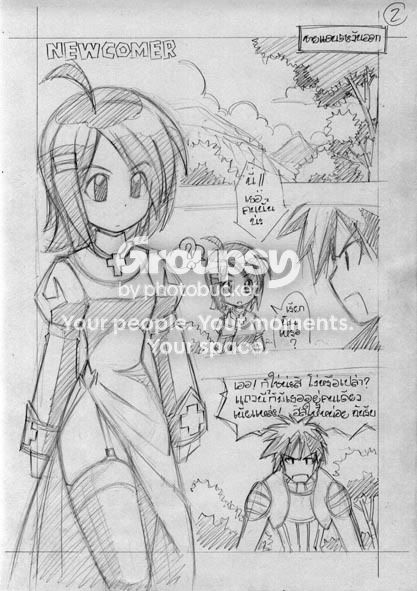
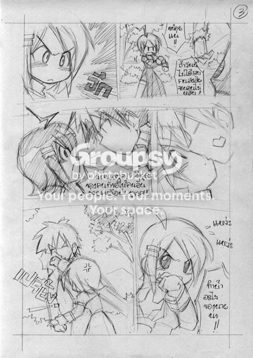

ECO Fanart
 โดย ECO » พุธ 12 ธ.ค. 2007 8:25 pm
โดย ECO » พุธ 12 ธ.ค. 2007 8:25 pm
ให้ตายสิ ไม่รู้ว่าจะหาเมลล์พี่จากไหนดีนะ ถ้าเป็นไปได้ผมต้องการคุยกับพี่ด่วนๆเลย MSNนะ
ของผม zeldaannie@hotmail.com ถึงงานของผมจะไม่เข้าตาใครก็เถอะเเต่ว่าพี่นี้ก็เป็นแีรงบันดาลใจเหมือนกับใครอีกหลายๆคนล่ะมั้ง ผมมีคำถามเป็นล้านข้อเลยล่ะที่จะถามพี่ ตั้งแต่อุปกรณ์ยันลายเ้ส้นนั่นหน่ะ ผมเรียนอยู่ยังไม่ใช่มหาวิทยาลัยหรอกอีกตั้ง 2 ปีกว่าจะสอบ ช่วยรบกวนด้วยนะครับ ตอนผมเห็นงาีนพี่้หน่ะก็อึ้งไปเหมือน...แต่คิดว่าถ้าได้อะไรมาเพิ่มงานของผมก็น่าจะไปถึงระดับนั้น
ไม่รู้ว่ามันจะรบกวนไปไหมเนี้ย

งานของผมเพิ่งจะปั่นมาลงบอร์ดเพื่อโพสหาพี่นี่เเหละ ไม่ค่อยดีเท่าไร่เพราะรีบไปหน่อย เห็นภาพพี่พวกนั้นมันรู้สึกเกิดเเรงกระตุ้นอะไรสักอย่างไม่รู้
ของผม zeldaannie@hotmail.com ถึงงานของผมจะไม่เข้าตาใครก็เถอะเเต่ว่าพี่นี้ก็เป็นแีรงบันดาลใจเหมือนกับใครอีกหลายๆคนล่ะมั้ง ผมมีคำถามเป็นล้านข้อเลยล่ะที่จะถามพี่ ตั้งแต่อุปกรณ์ยันลายเ้ส้นนั่นหน่ะ ผมเรียนอยู่ยังไม่ใช่มหาวิทยาลัยหรอกอีกตั้ง 2 ปีกว่าจะสอบ ช่วยรบกวนด้วยนะครับ ตอนผมเห็นงาีนพี่้หน่ะก็อึ้งไปเหมือน...แต่คิดว่าถ้าได้อะไรมาเพิ่มงานของผมก็น่าจะไปถึงระดับนั้น
ไม่รู้ว่ามันจะรบกวนไปไหมเนี้ย
งานของผมเพิ่งจะปั่นมาลงบอร์ดเพื่อโพสหาพี่นี่เเหละ ไม่ค่อยดีเท่าไร่เพราะรีบไปหน่อย เห็นภาพพี่พวกนั้นมันรู้สึกเกิดเเรงกระตุ้นอะไรสักอย่างไม่รู้
- ECO
- Dark Warrior

- โพสต์: 276285
- ลงทะเบียนเมื่อ: พุธ 26 ต.ค. 2011 9:31 pm


 โดย ECO » เสาร์ 15 ธ.ค. 2007 7:35 pm
โดย ECO » เสาร์ 15 ธ.ค. 2007 7:35 pm

"ขอบคุณ" คงน้อยไปสำหรับ น้องๆที่คอยเอาใจช่วย หรือ ที่ผ่านไปผ่านมาและแวะเข้ามาทักทายกัน ยังไงก็ ขอบคุณอีกครั้งนะครับ
ไปทำงานประจำมา ไม่ได้เข้าบอร์ดเลย แล้วก็ไม่ได้เล่นเกมส์ออนไลน์แล้วด้วย ตอนแรกนึกว่ากระทู้ตกหรือถูกลบไปแล้ว ช่วงนี้ ลาออกจากงาน เซงๆเลยเข้ามาเดินเล่น ตกใจ มันยังอยู่คับพี่น้อง O_o"
jo_xjack@hotmail.com นี่เป็นเบอร์เอ็มที่ออนทุกวัน (จริงๆก็มีในประวัติอ่ะแหล่ะ ไม่กดดูกันเอง) คุยมั่งไม่คุยมั่ง ตามอามณ์ ถ้าจะถามเรื่อง วาดรูป พี่คงตอบอะไรไม่ได้มากอย่างที่หวัง เพราะเป็นคนสอนไม่เก่ง แล้วอีกอย่าง มันไม่มีทางลัดนะ ไม่มีพรสวรรค์ มีแต่ความพยายาม ก็เหมือนกับความรักล่ะนะ เริ่มชอบเมื่อแรกเห็น จากั้นก็ไปหา ทุกวันๆ พูดกันวันละนิดวันละหน่อย ทะเลาะกันมั่ง งอนกันมั่ง ตามเรื่อง เป็นเดือน เป็นปี คำพูดเป็นพันล้านคำ สรุปได้ออกมาประโยคเดียว ฉันรักเธอ (แหว่ะ เน่าได้เนียลจริงๆ)
ก็นะ ขนาดเก็บเลเวลในเกม ยากแค่ไหน ยังเก็บได้ทุกวันเลย แล้วถ้าจะบอกว่า รักการวาดภาพ ก็น่าจะวาดได้ทุกวันจริงมะ วันละขีดสองขีด ซักวันก็จะเป็นภาพใหญ่ที่สมบูรณ์
คิดถึง Eco เหมือนกันนะ แต่ต้องเร่งวาดให้ทันเดือนสอง มีไรให้ทำเยอะเลย เกมคอมกับPSP ที่ยังไม่ได้เล่น กองอยู่เพียบ เพื่อนก็ยังไม่ไปหา vcd ซื้อมาก็ยังไม่ได้ดู เกรงใจ เจ้าของบอร์ดเค้าจริงๆ ตั้งหัวข้อก็ไม่ตรง แถมลงแต่เกมอื่น ง่ะ โทดทีค้าบ แต่ไม่รู้จะไปไหนอ่า -_-" น้องๆในบอร์ดนี้ น่ารักสุดแระ ขออยู่นี่แระกันเนอะ เผื่อเจอคนถูกใจ จะได้มีแฟนกะเค้าซักที อิอิ ไม่แน่นะ วันดีคืนดี อาจจะไปวิ่งหนีหมู อีกครั้งก็ได้ (กำ ลืมไอดีไปแล้ว)
- ECO
- Dark Warrior
- โพสต์: 276285
- ลงทะเบียนเมื่อ: พุธ 26 ต.ค. 2011 9:31 pm
 โดย ECO » อาทิตย์ 16 ธ.ค. 2007 10:16 pm
โดย ECO » อาทิตย์ 16 ธ.ค. 2007 10:16 pm
jo-xjack เขียน:
ถ้าจะถามเรื่อง วาดรูป พี่คงตอบอะไรไม่ได้มากอย่างที่หวัง เพราะเป็นคนสอนไม่เก่ง แล้วอีกอย่าง มันไม่มีทางลัดนะ ไม่มีพรสวรรค์ มีแต่ความพยายาม ก็เหมือนกับความรักล่ะนะ เริ่มชอบเมื่อแรกเห็น จากั้นก็ไปหา ทุกวันๆ พูดกันวันละนิดวันละหน่อย ทะเลาะกันมั่ง งอนกันมั่ง ตามเรื่อง เป็นเดือน เป็นปี คำพูดเป็นพันล้านคำ สรุปได้ออกมาประโยคเดียว ฉันรักเธอ (แหว่ะ เน่าได้เนียลจริงๆ)
ก็นะ ขนาดเก็บเลเวลในเกม ยากแค่ไหน ยังเก็บได้ทุกวันเลย แล้วถ้าจะบอกว่า รักการวาดภาพ ก็น่าจะวาดได้ทุกวันจริงมะ วันละขีดสองขีด ซักวันก็จะเป็นภาพใหญ่ที่สมบูรณ์
โดนใจจริงๆลูกพี่... 8) แต่มีคำถามอยู่ไม่กี่ข้อที่จะถามอ่านะ คือ....
ีพี่ซื้อปากกายี่ห้ออะไรมาใช้อ่ะ? เท่านั้นเเหละที่ข้องใจ
กับ tablet ของพี่ของwacom เปล่า เเล้วรุ่นอะไรเหรอ?
ส่วนเรื่องเทคนิคการวาดนั้นผมเข้าใจว่ามันไม่ใช่เรื่องที่จะฟังจากคนอื่นเล้วจะทำได้ทันที ดังนั้นผมจึงไม่ขอเอ่ยเพราะตอนนี้ก็พยายามเต็มที่เหมือนกันที่จะพัฒนาตนเองให้เพิ่มระดับ เลเวลอัพมากขึ้น
แค่เนี้ยล่ะคร้าบ
ปล.ผมข้ิองใจกับอุปกรณ์เท่านั้นเเหละ ส่วนเรื่องเทคนิคนี้ก็ค้นคว้าเอง
- ECO
- Dark Warrior
- โพสต์: 276285
- ลงทะเบียนเมื่อ: พุธ 26 ต.ค. 2011 9:31 pm
 โดย ECO » อังคาร 18 ธ.ค. 2007 1:21 am
โดย ECO » อังคาร 18 ธ.ค. 2007 1:21 am
ส่วนใหญ่ พี่จะไม่เน้นอุปกรณ์นะ เน้นพื้นฐานของเส้นดินสอมากกว่า
ก็มีกระดาษถ่ายเอกสารธรรมดา ใช้ในงานขาว-ดำ
กระดาษร้อยปอนด์แบบแผ่นใหญ่ๆมาตัดเอง ใช้ในงานสี
ส่วนสี ก็ดีขึ้นมานิด แล้วแต่จะหาได้ ใช้ตั้งแต่ตราม้า ถึง วินเซอร์ แพงกว่านั้น ไม่อาว
ดินสอกด 0.5 ซื้อในเซเว่นพร้อมไส้ ภู่กันก็ของมาสเตอร์อาร์ทสีเขียวๆ ขายแพ็ค3ด้าม
ปากกาหัวสักหลาดไม่ระบุยี่ห้อ ขนาด 005 01 03 05 แยกใช้ตามขนาดของเส้น
โปรแกรมที่ใช้บ่อยที่สุดก็เป็น โฟโต้ชอป 7.0 เพราะพิมพ์ "ญ" ได้ เวอร์ชั่นอื่นจะพิมพ์ไม่ติด
คอมก็พื้นๆค้าบ ใช้เมาส์หนูอันละ99เอง ไม่มีของอะไรแปลกประหลาด
เทคนิคพิเศษ? ไม่มีแฮะ เพราะพี่ชอบวาดรูปผู้หญิงจากภาพถ่าย วาดคนโน้นที วาดคนนี้ที แค่คนที่ไม่เคยวาดให้เลยก็คือคนที่ตัวเองเคยรัก ถึงอยากวาดแต่ก็ไม่มีแบบแล้ว เอางี้มะ? ใครที่มีแบบเป็นของตัวเองแล้ว ลองหาเวลาว่างนั่งวาดคนรักของตัวเองดู พี่เชื่อว่า มันจะเป็นภาพที่มีคุณค่ามากต่อผู้วาดเอง ผู้รับเค้าคงไม่ปลื้มหรอก เพราะแรกๆเราอาจจะวาดไม่เหมือน แต่ภาพทั้งหมดจะถูกบันทึกลงในความทรงจำของคนทั้งสองไม่มีวันลบเลือน
ก็มีกระดาษถ่ายเอกสารธรรมดา ใช้ในงานขาว-ดำ
กระดาษร้อยปอนด์แบบแผ่นใหญ่ๆมาตัดเอง ใช้ในงานสี
ส่วนสี ก็ดีขึ้นมานิด แล้วแต่จะหาได้ ใช้ตั้งแต่ตราม้า ถึง วินเซอร์ แพงกว่านั้น ไม่อาว
ดินสอกด 0.5 ซื้อในเซเว่นพร้อมไส้ ภู่กันก็ของมาสเตอร์อาร์ทสีเขียวๆ ขายแพ็ค3ด้าม
ปากกาหัวสักหลาดไม่ระบุยี่ห้อ ขนาด 005 01 03 05 แยกใช้ตามขนาดของเส้น
โปรแกรมที่ใช้บ่อยที่สุดก็เป็น โฟโต้ชอป 7.0 เพราะพิมพ์ "ญ" ได้ เวอร์ชั่นอื่นจะพิมพ์ไม่ติด
คอมก็พื้นๆค้าบ ใช้เมาส์หนูอันละ99เอง ไม่มีของอะไรแปลกประหลาด
เทคนิคพิเศษ? ไม่มีแฮะ เพราะพี่ชอบวาดรูปผู้หญิงจากภาพถ่าย วาดคนโน้นที วาดคนนี้ที แค่คนที่ไม่เคยวาดให้เลยก็คือคนที่ตัวเองเคยรัก ถึงอยากวาดแต่ก็ไม่มีแบบแล้ว เอางี้มะ? ใครที่มีแบบเป็นของตัวเองแล้ว ลองหาเวลาว่างนั่งวาดคนรักของตัวเองดู พี่เชื่อว่า มันจะเป็นภาพที่มีคุณค่ามากต่อผู้วาดเอง ผู้รับเค้าคงไม่ปลื้มหรอก เพราะแรกๆเราอาจจะวาดไม่เหมือน แต่ภาพทั้งหมดจะถูกบันทึกลงในความทรงจำของคนทั้งสองไม่มีวันลบเลือน
- ECO
- Dark Warrior
- โพสต์: 276285
- ลงทะเบียนเมื่อ: พุธ 26 ต.ค. 2011 9:31 pm
 โดย ECO » อังคาร 18 ธ.ค. 2007 7:26 pm
โดย ECO » อังคาร 18 ธ.ค. 2007 7:26 pm
jo-xjack เขียน:ปากกาหัวสักหลาดไม่ระบุยี่ห้อ ขนาด 005 01 03 05 แยกใช้ตามขนาดของเส้น
อันนี้หมายถึงปากกาแบบ "PIGMA"(ของซากุระ) หรือเปล่า? หรือคล้ายๆอย่างนี้
 (มันก็หัวสักหลาดของ ROTRING นั่นแหละ)
(มันก็หัวสักหลาดของ ROTRING นั่นแหละ)เทคนิคพิเศษ? ไม่มีแฮะ เพราะพี่ชอบวาดรูปผู้หญิงจากภาพถ่าย วาดคนโน้นที วาดคนนี้ที แค่คนที่ไม่เคยวาดให้เลยก็คือคนที่ตัวเองเคยรัก ถึงอยากวาดแต่ก็ไม่มีแบบแล้ว เอางี้มะ? ใครที่มีแบบเป็นของตัวเองแล้ว ลองหาเวลาว่างนั่งวาดคนรักของตัวเองดู พี่เชื่อว่า มันจะเป็นภาพที่มีคุณค่ามากต่อผู้วาดเอง ผู้รับเค้าคงไม่ปลื้มหรอก เพราะแรกๆเราอาจจะวาดไม่เหมือน แต่ภาพทั้งหมดจะถูกบันทึกลงในความทรงจำของคนทั้งสองไม่มีวันลบเลือน
โดนจายมาก
ไม่น่าเชื่อว่าพี่ไม่ใช้ TABLET ใช้เเค่เมาส์อันล่ะ 99 บาท- -" เวลาลงสีเนี้ย หนึ่งในขั้นตอนนั้นพี่ก็ใช้เส้นpath งั้นรึ?
สรุปแล้วมันเป็นอะไรที่กลับคืนสู่สามัญมากๆเลย จอร์จ
- ECO
- Dark Warrior
- โพสต์: 276285
- ลงทะเบียนเมื่อ: พุธ 26 ต.ค. 2011 9:31 pm
 โดย ECO » อาทิตย์ 30 ธ.ค. 2007 6:42 pm
โดย ECO » อาทิตย์ 30 ธ.ค. 2007 6:42 pm




โฮ่ๆ วาดพ้นหน้าแรกจนได้นะเรา เรื่องของเรื่องคือเคยสัญญากะคนๆนึงว่าจะวาดเรื่องนี้ให้จบ ผ่านมาเกือบ5ปี ไม่ไปไหนเลยเพราะคิดแค่ว่า มันต้องดี มันต้องสวย อย่างโง้นอย่างงี้ก็เลย... -_-" ปกติเป็นคนชอบวาด illiust มากกว่า comic ก็เลยวาดแผ่นเดียวแล้วจอด อยากให้จบไวๆก็เลยออกมาแนว สตอรี่บอร์ดมากกว่างานจริง วาดไปวาดมา หน้าเริ่มเด็กลง ตัวเริ่มหดลงเรื่อยๆ ฮ่าๆ
ปกติปากกาที่พี่ใช้อยู่ก็ picma หรือ sakura นั่นล่ะครับ ของ rotring เค้าแพงไปนิด
ยังยืนยันคำเดิมนะ พื้นฐานการร่างภาพ สำคัญกว่า คอมพิวเตอร์ Q(^๐^Q)
- ECO
- Dark Warrior
- โพสต์: 276285
- ลงทะเบียนเมื่อ: พุธ 26 ต.ค. 2011 9:31 pm


ย้อนกลับไปยัง Fan Art & Fiction
ผู้ใช้งานขณะนี้
่กำลังดูบอร์ดนี้: ไม่มีสมาชิก และ บุคคลทั่วไป 1 ท่าน